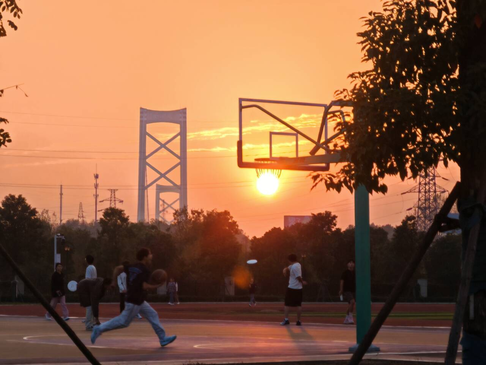
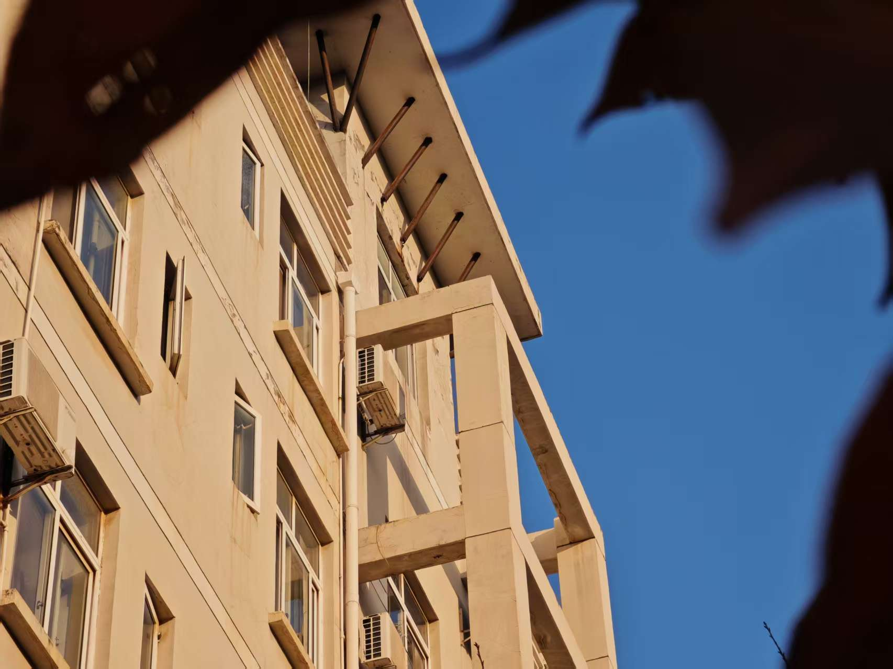

原来每天下课匆匆错过的方向，藏着校园最温柔的告别仪式。今天，我们替你把日落装进相册。



原来每天下课匆匆错过的方向，藏着校园最温柔的告别仪式。今天，我们替你把日落装进相册。
雨把校园洗成了滤镜，平时踩过的石阶、路过的花架，突然变成了会说话的风景——你有多久没在雨后走过一次校园？
深夜的校园里，路灯投下温柔的微光，像是给疲惫的学子们披上了一层暖意的薄纱，让寂静的夜色也染上了几分诗意的温度。
金秋时节，湖大的校园被染上一层温暖的色彩。银杏大道铺满金黄，与古朴的教学楼相映成趣，构成一副诗意的画卷。
湖大的角落，把寻常缝成光。光影写日记、青苔做注脚，老墙与藤蔓低语，风过叶响都是不被打扰的乐章。每一砖一瓦皆肌理、一草一木皆情绪。
"大学生活不仅有学习。"
"更重要的是探索。"
"保持好奇心会发现生活处处都有惊喜。"
"在大学的磨练下，心里的压抑难以发泄，心理咨询室提供了一个很好的场所。"
"莫怕，雄起！"
"吵点好，有生气。"
"有鸡鸣狗叫，才是人家。"
"我的青春可能就是这把扫帚了。"
"每天都能看到学生在那看书，学生们都爱把它当成秘密基地，有的对电脑敲敲打打，有的捧着课本写作业，有的三三两两在这小声讨论问题，有的安安静静琢磨题目，感觉他们比上课还认真。"
"第三空间作为一个小空间，可以交流交往、释放压力。"
"辅导员的工作就像是在探索青春的秘境。"
"我觉得真正的秘境不在于远方或者实际事物，而在于你的内心深处。当你们遇到困难时，可以问问自己内心的声音，也可以向外界寻求帮助。"
秋风为沙湖调好底色
银杏将琴园染成诗行
漫步湖大
脚下是知识的厚度
抬头是季节馈赠的璀璨华章
月光为跑道镀银
楼宇的星火是未眠的理想
这静谧的微光里
正孕育着破晓的力量
这里，知识与美梦同住，每一隅都藏着诗
湖北大学
Good luck for all of you